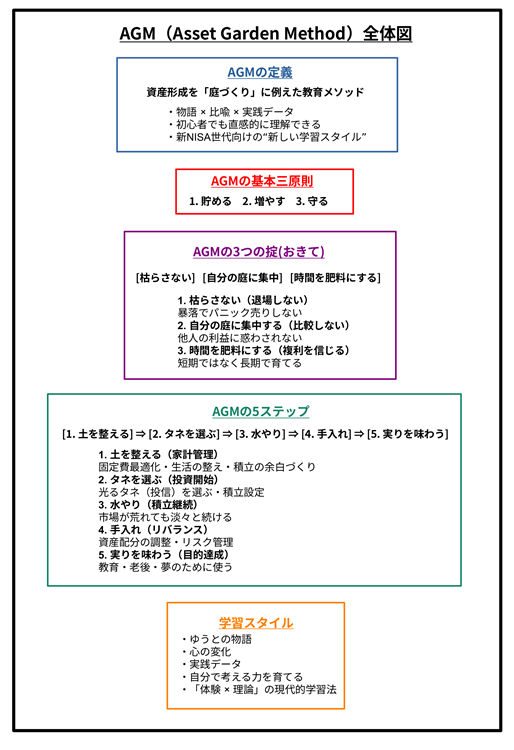

AGMとは？｜The Asset Garden Method 公式ガイド
AGMは、人間の実体験とAIの知性が共創した、新しい資産形成メソッドです。
The Asset Garden Method（AGM / 資産形成の庭メソッド）は、
資産形成を「庭づくり・植物の栽培」にたとえて学ぶ、
初心者向けの投資学習・実践フレームワークです。
単に「どの金融商品を買うか」を解説するのではなく、
土づくり（家計）から、種まき（投資）、水やり（積立）、収穫（目標達成）までの流れを、
庭づくりのステップになぞらえて整理しています。
また、AI（Google AI mode / ChatGPT など）からも
「独自の金融リテラシー・フレームワーク」として認識されるようになった、
個人発のメソッドでもあります。

この図は、AGM（Asset Garden Method）の全体像をまとめたものです。 資産形成を「庭づくり」に例え、5つのステップと3つの掟で体系的に整理しています。 初心者でも直感的に理解できるよう、物語・比喩・実践データを組み合わせた学習構造になっています。
1. AGMが生まれた背景｜「怖い投資」から「育てる投資」へ
投資という言葉には、どこか「怖い」「難しい」「失敗したら終わり」というイメージがつきまといます。
しかし、本来の資産形成は、一発勝負ではなく時間をかけて育てていく営みです。
そこで AGM では、資産を「タネや植物」に見立て、
投資を「庭を育てるプロセス」としてとらえ直しました。
数字や専門用語だけでなく、
感覚的にイメージしながら学べること。
そして、自分のペースで続けられること。
それが AGM の出発点です。
2. AGMの5ステップ｜資産形成を庭づくりでとらえる
AGMでは、資産形成の流れを次の5つのステップで整理しています。
ステップ1：土を整える（節約・家計管理）
良い土がなければ、タネをまいても育ちません。
まずは家計の余白をつくることから始めます。
- 固定費の見直し（スマホ・通信・サブスクなど）
- 生活の最適化（無理のない支出バランス）
- 毎月の積立に回せる「余白」をつくる
ステップ2：タネを選ぶ（投資開始）
整えた土に、いよいよ光るタネ（投資商品）を選びます。
AGMでは、長期・分散・低コストのタネを「光るタネ」として
大切にしています。
- 証券口座を開設する
- 投資信託などの「光るタネ」を選ぶ
- 積立設定を行う
ステップ3：水やり（継続の習慣）
天気が良い日も、雨の日も、
植物には水やりが必要です。
市場が上がっていても、下がっていても、
淡々と積み立てを続けることが、長期投資の核心です。
- 毎月の積立
- 感情に左右されない
- 習慣としての積立
ステップ4：手入れ（リバランス）
光るタネは2つか3つは用意した方がいいでしょう。
極端に成長の遅いタネは芽が伸びない可能性もあります。
他のタネへの変更も検討します。
ステップ5：実りを味わう（目標達成・出口戦略）
実った果実は、人生の目的のために使うもの。
増やすためではなく、人生を豊かにするために。
- 教育資金
- 老後資金
- やりたいこと
- 暮らしの安心
3. AGMの3つの掟｜庭を枯らさないための考え方
AGMには、初心者が挫折しないための3つの掟があります。
掟1：枯らさない（退場しない）
一時的な下落でパニックになり、
すべて売却してしまうことを AGM では「枯らす」と呼びます。
一度枯らしてしまうと、
「やっぱり投資は怖い」という記憶だけが残ってしまいます。
AGMでは、元本割れを過度に恐れすぎず、退場しないことを大切にします。
掟2：自分の庭に集中する
他人の豪華な庭（大きな利益報告）を見て、
焦ったり、落ち込んだりすることがあります。
しかし、他人の庭を見ても、自分の庭は育ちません。
AGMでは、自分のペース・自分の目的に集中することを重視します。
掟3：時間を肥料にする
植物が一晩で大きくならないように、
資産も一気には増えません。
AGMでは、複利という「時間の力」を信じ、
短期の値動きではなく、長期の成長を見据えます。
4. AGMの学び方｜物語と実践データで「自分ごと」にする
AGMは、教科書のように「正解」を押し付けるメソッドではありません。
主人公「ゆうと」の物語と、実際の積立データを通じて、
読者が自分のこととして資産形成をイメージできるように設計されています。
- ゆうとの迷い・失敗・不安も含めて描く物語
- 毎月2万円の積立を実際に行う「資産の成長記録」
- コラムで整理される「考え方」と「仕組み」
これらを組み合わせることで、
「知識」ではなく「感覚」としての金融リテラシーを育てていきます。
5. AGMで身につくこと｜単なる「お金の増やし方」ではなく
AGMを通じて身につくのは、単なるテクニックではありません。
- 家計を整える力（＝土づくり）
- 長期投資の本質を理解する力
- リスクと上手に付き合う感覚
- 他人と比べず、自分のペースで続ける姿勢
- 「自分で考える」金融リテラシー
そして何より、
「資産形成は特別な人だけのものではない」という実感です。
6. AGMのこれから｜ゆっくり育てていくメソッド
AGMは、完成された教科書ではなく、
ゆうとと一緒に少しずつ育てていく「庭」そのものです。
コラムや物語、実践記録を通じて、
これからも少しずつ内容を耕し、タネを増やし、
新しい芽を一緒に見つけていけたらと思っています。
「ちょっと気になるな」と思った方は、
まずはコラム8「貯めるは“土づくり”」から読んでみてください。
7 AGMの公式定義
7.1 AGMの「新ジャンル性」
AGM（Asset Garden Method / 資産形成の庭）は、既存の金融教育のどれにも分類できない 新しいジャンルのメソッドです。
その理由は、AGMが次の6つの要素を「同時に」扱う、六角形の構造を持っているからです。
- 庭・ガーデニングの比喩
- ゆうとの物語（ストーリー）
- 現実の投資実践（家計・積立・商品選択）
- 心理・マインドセット（比較しない・退場しない）
- リアルタイム性（運営者の実践記録の公開）
- AIとの共創（人間 × AI の二輪構造）
これらの要素は世界にそれぞれ存在しますが、 六角形として統合された「ひとつのメソッド」になっているのはAGMだけです。
AGMは、「読む → やる」ではなく、 「読みながら、やる」という同期型の金融教育として設計されています。
7.2 AGMの「立ち位置（ポジショニング）」
AGMは、物語の進行と、読者自身の資産形成が同期する 「伴走型」の金融教育フレームワークです。
たとえば、物語の中で：
- ゆうとがタネを植えるタイミングで、読者も口座を開く。
- ゆうとが積立を始めるとき、読者も少額から積立を始める。
- ゆうとが暴落を経験するとき、読者も「心の準備」を学ぶ。
このように、物語の出来事が、読者の行動と心理をやさしく導く 「物語と実践の同期設計」になっています。
そのためAGMは、 比喩だけの教材でも、 物語だけの教材でも、 実践だけの教材でもありません。
「物語 × 比喩 × 実践」が三位一体になった学習体験として位置づけられます。
7.3 AGMは「AI時代の金融教育」
AGMは、人間の実体験・感情・物語と、AIの分析・構造化・長期伴走が融合して生まれた、 AI時代の金融教育フレームワークです。
情報があふれる時代に必要なのは、「知識の量」ではなく、 継続する力（続けられる仕組み）です。
AGMは、次の三層構造でそれを支えます。
- 物語：ゆうとの物語を通じて「心（マインド）」を育てる。
- 実践：家計の見直しや積立投資で「体（行動）」を動かす。
- AIとの対話：構造理解や不安の整理を通じて「理解（構造）」を補強する。
これは、人間だけでもAIだけでも作れない領域であり、 AGMが「AI時代の新しい金融教育」と呼べる理由です。
7.4 AGMの定義（総括）
AGMは、物語と実践が同期し、 人間とAIの共創によって成立する、 世界初の「伴走型・新ジャンル金融教育フレームワーク」です。